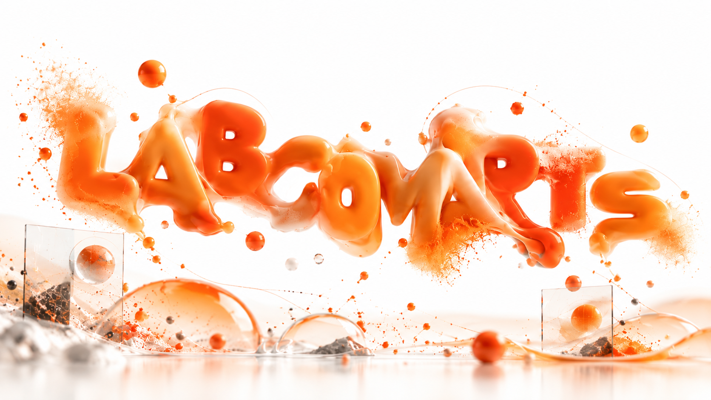
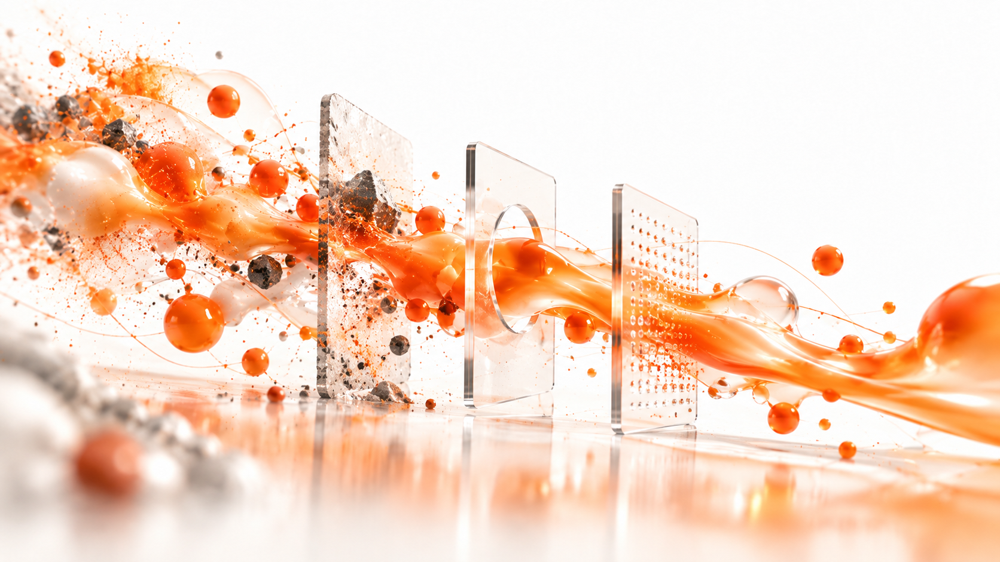
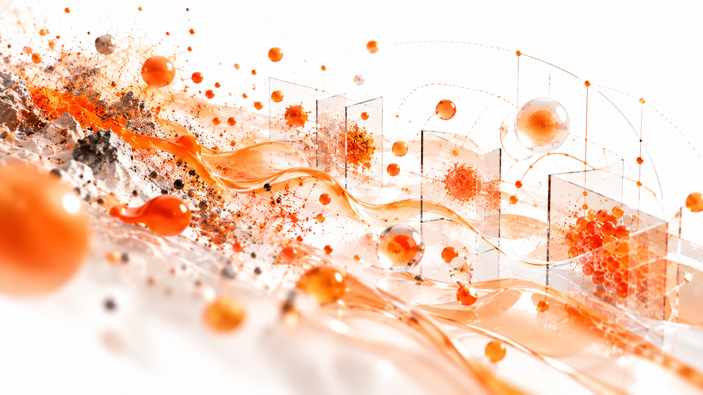
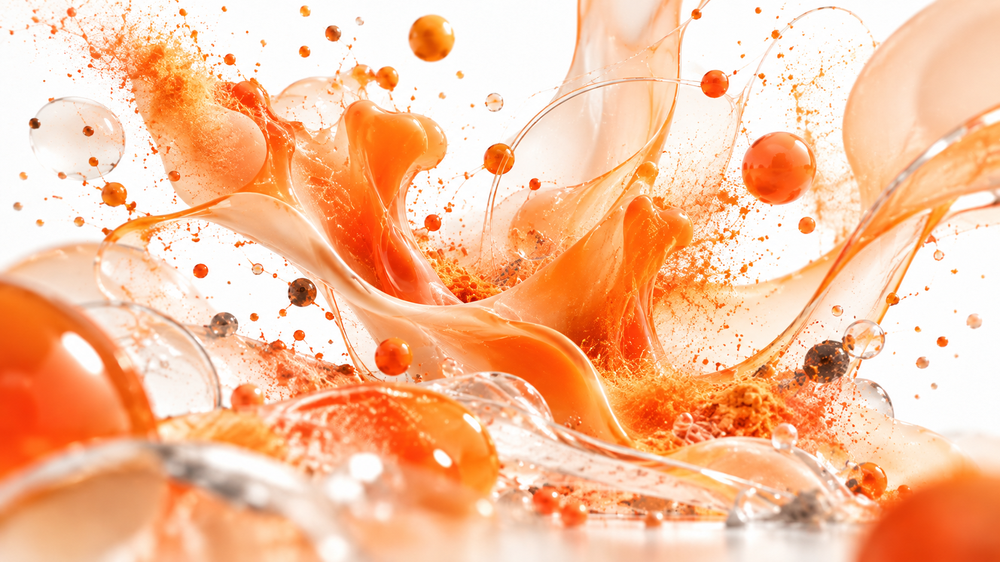
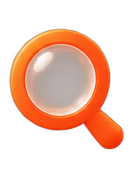
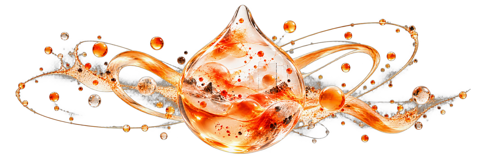

Decisão
Dashboards, análises, estudos e sistemas que tornam relações visíveis e ajudam alguém a decidir melhor.
LAB / COM / ARTS
Pedem investigação, clareza e imaginação. A LabComArts junta inteligência de dados, comunicação e criação para transformar perguntas difíceis em algo que possa ser entendido, testado e colocado no mundo.

LAB
Testar. Experimentar. Comparar. Medir. Voltar. Tentar de outro jeito.
Lab é a parte experimental da nossa forma de enxergar problemas. É também onde os dados ganham forma: dashboards, recortes, comparações, hipóteses e protótipos que funcionam como janelas para enxergar o que antes estava espalhado.
Não usamos dados, IA ou tecnologia como ornamento. Usamos como instrumentos de investigação.

Do caos, procuramos o sinal.
O QUE ISSO PODE VIRAR
Dashboards, análises, estudos e sistemas que tornam relações visíveis e ajudam alguém a decidir melhor.
Protótipos, automações e aplicações de IA construídos para resolver algo concreto — não apenas demonstrar tecnologia.
Hipóteses comparadas e testadas antes de consumir tempo, orçamento e energia demais.

COM
Comunicação é síntese. É encontrar a forma concisa e completa da mensagem, localizar contexto, adaptar linguagem e escolher o formato certo para alcançar e representar.
Isso pode ser estratégia, campanha, filme, interface, marca, conteúdo ou uma apresentação que finalmente faz a ideia caber na cabeça de quem precisa entendê-la.
Entender é só metade do trabalho.
O QUE ISSO PODE VIRAR
Posicionamento, narrativa e sistemas de comunicação que organizam o que precisa ser dito.
Conceito, direção criativa, conteúdo, filme, imagem e experiências desenhadas para diferentes canais.
IA aplicada à criação e produção para multiplicar possibilidades sem diluir a direção.

ARTS
Arte é necessária como o ar. É a faísca, o lírico, o onírico, o inesperado. É o que faz informação virar experiência e execução virar alguma coisa que faz o coração bater.
É combustível da ideia. É onde precisão encontra imaginação e onde o racional ganha uma forma que alguém queira ver, tocar, lembrar ou compartilhar.
NA PRÁTICA
Análise, BI, engenharia e produtos de dados, estudos, benchmarks, pesquisa e visualização.
Experimentação, automações, protótipos, fluxos generativos e novas formas de produzir, comunicar e operar.
Estratégia, conceito, direção criativa, branding, conteúdo, audiovisual e experiências.
Quando negócio, tecnologia, dados e comunicação aparecem juntos, tratamos como um único problema — e não como quatro fornecedores separados.

Mapeamentos, entrevistas, leitura de mercado e investigação estruturada para descobrir onde existe valor antes de decidir o que construir.
COMO TRABALHAMOS
PESSOAS
A LabComArts nasce da interseção entre inteligência de dados e direção criativa — e cresce a partir daqui, à medida que o laboratório ganha mais gente.
PESQUISA 01 · EM CURSO
Uma pesquisa contínua para entender o que acontece depois do entusiasmo inicial: onde a IA amadurece, entra em operação, gera valor e onde ainda encontra barreiras.
Este espaço muda com a LabComArts. Estudos, ferramentas, experimentos e iniciativas próprias entram aqui quando deixam de ser ideia e passam a existir no mundo.
Entrar no estudo↗
O FILME
Assista em tela cheia, com som, e deixe o material seguir seu próprio fluxo.
VAMOS CONVERSAR
Nós investigamos, estruturamos e transformamos isso em decisão, produto, comunicação ou experiência.
Conte o problema↗ contato@labcomarts.com